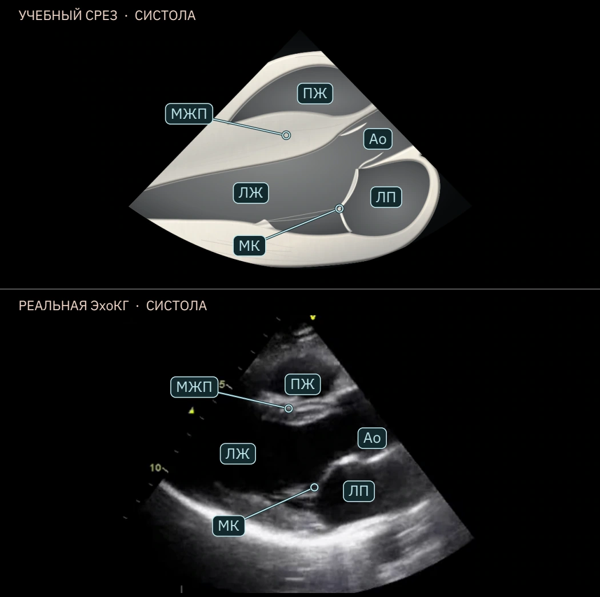
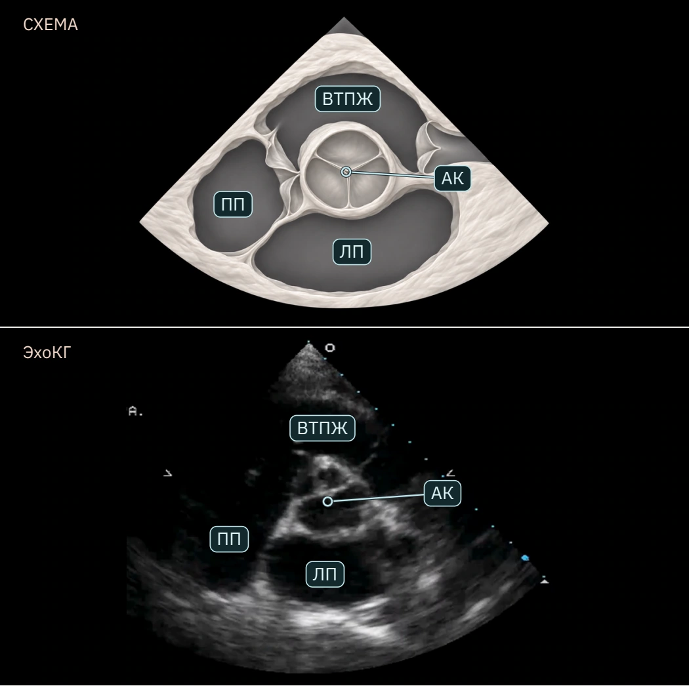
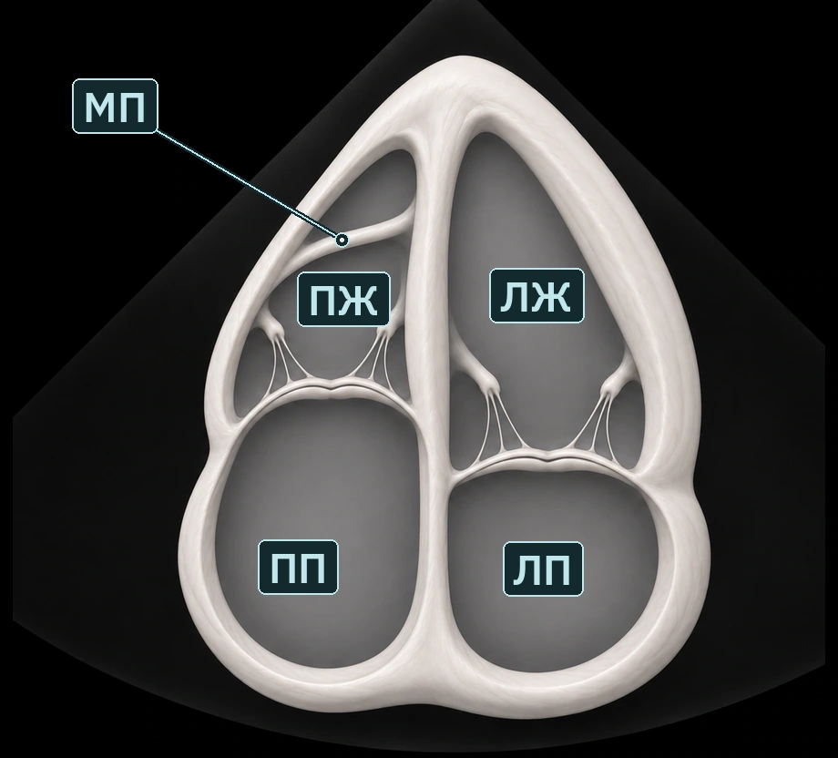
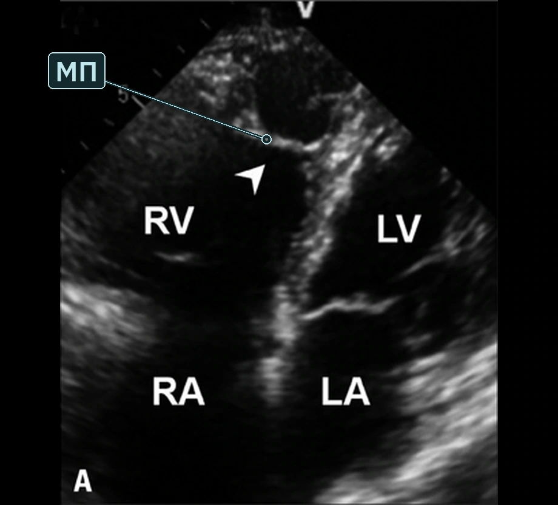
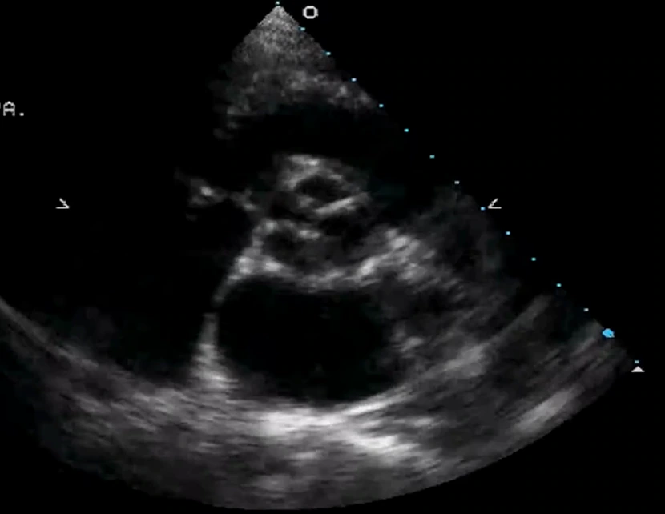
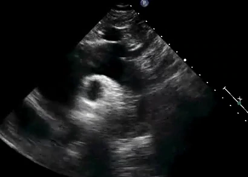

На схеме и реальном кадре показана систола. Левый желудочек вытянут вдоль среза. Позади корня аорты видно левое предсердие, а между левыми камерами — сомкнутый митральный клапан.
Что проследить в движении
Начни с сомкнутого митрального клапана. Проследи, как створки расходятся в диастолу и вновь смыкаются в систолу.
Схема и кадр с обозначениями

ПЖ
Правый желудочек, видимая часть
ЛЖ
Левый желудочек
ЛП
Левое предсердие
Ао
Корень аорты
МК
Митральный клапан
МЖП
Межжелудочковая перегородка
От предсердия к аорте
Найди обе створки
В диастолу передняя створка направляется к межжелудочковой перегородке, задняя — к задней стенке левого желудочка. Между ними кровь поступает из предсердия в желудочек.
Найди перикард
Проследи заднюю стенку левого желудочка в глубину. За миокардом видна яркая линия перикарда.
Срез проходит на уровне аортального клапана. Корень аорты виден в поперечном сечении. Спереди его огибает выносящий тракт правого желудочка, позади лежит левое предсердие.
Что проследить в движении
Найди аортальный клапан в центре и проследи несколько сердечных циклов. В диастолу створки смыкаются, в систолу расходятся.
Схема и кадр с обозначениями

АК
Аортальный клапан
ВТПЖ
Выносящий тракт правого желудочка
ПП
Правое предсердие
ЛП
Левое предсердие
Три створки аортального клапана
Две фазы одной петли
Сначала найди в центре место смыкания трёх створок. В начале систолы их края расходятся, и на этом же месте появляется тёмный просвет.
Ориентиры створок
Правая коронарная створка прилежит к выносящему тракту правого желудочка. Некоронарная створка соседствует с межпредсердной перегородкой.
Верхушка ближе к датчику, предсердия глубже. В правом желудочке найди модераторный пучок — мышечную перемычку, которая отходит от межжелудочковой перегородки.
Что проследить в движении
Останови петлю при сомкнутых клапанах и найди их септальные точки прикрепления. Сравни обе точки на одном кадре.
Четыре камеры и модераторный пучок
Схема

Реальная ЭхоКГ · отдельный стоп-кадр

МП
Модераторный пучок
ПЖ / RV
Правый желудочек
ЛЖ / LV
Левый желудочек
ПП / RA
Правое предсердие
ЛП / LA
Левое предсердие
Два уровня клапанов
Сравни точки у перегородки
Трикуспидальный клапан находится между правыми камерами, митральный — между левыми. Точка прикрепления трикуспидального клапана к перегородке ближе к верхушке. На реальном снимке эти уровни отмечены пунктиром.
Две перегородки
Межжелудочковая перегородка разделяет желудочки, межпредсердная — предсердия. Проследи обе до центра сердца.
Пять клинических петель, 30 вопросов. Определи структуры под номерами 1, 2 и 3 на каждом кадре. Запусти петлю, чтобы рассмотреть движение клапанов. После каждого задания можно проверить ответы и прочитать разбор. Твои ответы сохраняются в этом браузере.
При записи захвати истинную верхушку. Если плоскость проходит мимо неё, левый желудочек выглядит короче.
Открыть ответ
Апикальная четырёхкамерная
Верхушка вверху, оба предсердия внизу. Справа на этом экране расположен левый желудочек. Между ним и левым предсердием находится митральный клапан.
При открытом митральном клапане кровь поступает из левого предсердия в левый желудочек, и его полость увеличивается. Если проследить место прикрепления створок к перегородке, трикуспидальный клапан в норме находится чуть ближе к верхушке.
M. L. de Alcantara и соавт., Brazilian Society of Cardiology, 2026. Приложение 2, видео 03. Кадр извлечён и кадрирован.
Источник
· CC BY 4.0
Задание Б

Посмотреть в движении
Подсказка
При записи слегка наклоняй датчик, пока в одном поперечном срезе не увидишь свободные края створок.
Открыть ответ
Короткая ось на уровне АК
Корень аорты пересечён поперёк. В центре виден аортальный клапан, позади него располагается левое предсердие. Число створок проверяют по их раскрытию в систолу.
Кпереди от корня аорты проходит выносящий тракт правого желудочка. Через него кровь поступает в лёгочный ствол. На закрытом аортальном клапане три линии смыкания створок в норме сходятся в центре, как буква Y.
I. A. C. van der Bilt (Vdbilt), CardioNetworks / ECHOpedia, отделение эхокардиографии AMC. Кадр извлечён и кадрирован.
Источник
· CC BY-SA 3.0
Задание Д

Посмотреть в движении
Подсказка
Чтобы проследить устья ветвей, слегка меняй наклон датчика.
Открыть ответ
Супрастернальная позиция
Восходящая аорта переходит в дугу, затем в нисходящую аорту. Под дугой видна правая лёгочная артерия в поперечном сечении.
При обычном ветвлении первым отходит плечеголовной ствол, второй — левая общая сонная артерия, третьей — левая подключичная артерия.
Начни с метки 3 и проследи изгиб сосуда к метке 1. Так виден переход восходящей аорты в дугу. У сосуда под дугой виден округлый просвет, характерный для поперечного среза.
Петли I. A. C. van der Bilt (CardioNetworks / ECHOpedia, AMC) кадрированы и перекодированы. Русские выноски добавлены к кадрам. Лицензия петель — CC BY-SA 3.0. Отдельный кадр с модераторным пучком взят из работы M. J. Kim и H. O. Jung (2013), рис. 6A. Панель кадрирована, добавлена выноска МП. Лицензия кадра — CC BY-NC 3.0.
Atif Qasim, MD MSCE, Echocardiographer.org. Обзорный срез и отдельная запись клапана крупным планом. Из петель выбраны фрагменты и кадры, выполнено кадрирование, добавлены русские обозначения. Автор разрешает использовать материалы с указанием авторства.
L. Corbett и соавт., British Society of Echocardiography, 2022. Эхограмма выделена из таблицы 1 на странице 27. Сохранены авторские обозначения BCA, LCCA и LSA. Русские обозначения даны на схеме и в легенде.
Monica Luiza de Alcantara и соавт., Brazilian Society of Cardiology, 2026. Приложение 2, видео 03. Для задания взяты кадр и движущаяся петля из одного исследования. Фрагмент кадрирован и перекодирован, звук удалён.